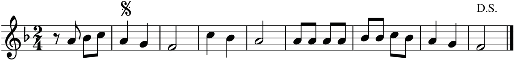
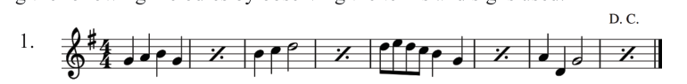
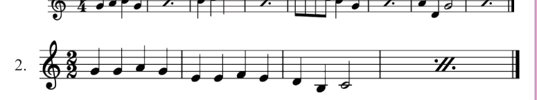
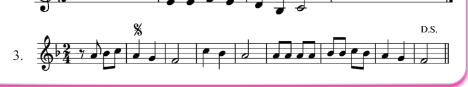
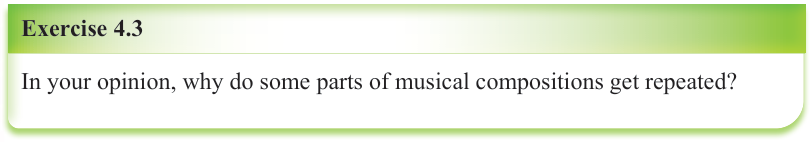
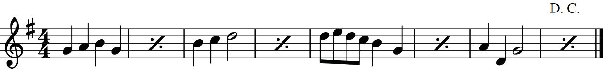
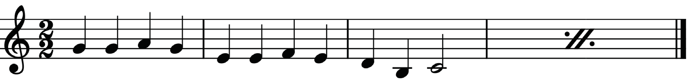
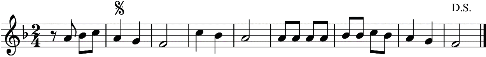
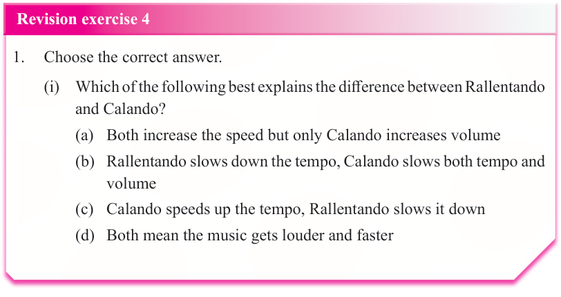

Figure 4.15: Dal Segno (D.S.) indicating repetition of a musical piece from the sign
Activity: 4.5
Sing the following melodies by observing the terms and signs used.
1.

2.

3.

Exercise 4.3

In your opinion, why do some parts of musical compositions get repeated?
Revision exercise 4
1. Choose the correct answer.
(i) Which of the following best explains the difference between Rallentando and Calando?



